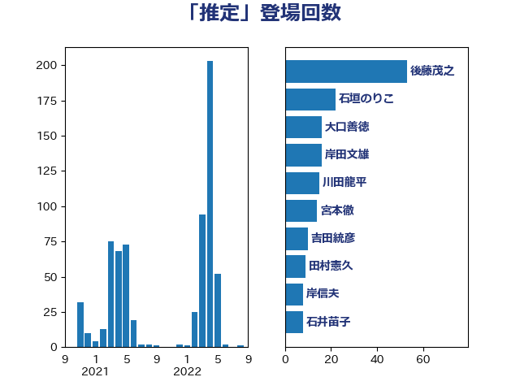

単語「推定」

| 後藤茂之 | 自由民主党 | 53 回 |
| 石垣のりこ | 立憲民主党 | 22 回 |
| 大口善徳 | 公明党 | 16 回 |
| 岸田文雄 | 自由民主党 | 16 回 |
| 川田龍平 | 立憲民主党 | 15 回 |
| 宮本徹 | 日本共産党 | 14 回 |
| 吉田統彦 | 立憲民主党 | 10 回 |
| 田村憲久 | 自由民主党 | 9 回 |
| 岸信夫 | 自由民主党 | 8 回 |
| 石井苗子 | 日本維新の会 | 8 回 |
| 萩生田光一 | 自由民主党 | 7 回 |
| 古川禎久 | 自由民主党 | 6 回 |
| 穀田恵二 | 日本共産党 | 6 回 |
| 西村康稔 | 自由民主党 | 6 回 |
| 倉林明子 | 日本共産党 | 5 回 |
| 山添拓 | 日本共産党 | 5 回 |
| 高良鉄美 | 無所属 | 5 回 |
| 伊佐進一 | 公明党 | 4 回 |
| 佐々木さやか | 公明党 | 4 回 |
| 大塚耕平 | 国民民主党 | 4 回 |
| 守島正 | 日本維新の会 | 4 回 |
| 林芳正 | 自由民主党 | 4 回 |
| 横沢高徳 | 立憲民主党 | 4 回 |
| 浜野喜史 | 国民民主党 | 4 回 |
| 秋野公造 | 公明党 | 4 回 |
| 赤羽一嘉 | 公明党 | 4 回 |
| 上川陽子 | 自由民主党 | 3 回 |
| 上田清司 | 国民民主党 | 3 回 |
| 吉良よし子 | 日本共産党 | 3 回 |
| 和田政宗 | 自由民主党 | 3 回 |
| 和田有一朗 | 日本維新の会 | 3 回 |
| 尾崎正直 | 自由民主党 | 3 回 |
| 山崎正恭 | 公明党 | 3 回 |
| 岩渕友 | 日本共産党 | 3 回 |
| 徳永エリ | 立憲民主党 | 3 回 |
| 浅野哲 | 国民民主党 | 3 回 |
| 米山隆一 | 立憲民主党 | 3 回 |
| 野上浩太郎 | 自由民主党 | 3 回 |
| 金村龍那 | 日本維新の会 | 3 回 |
| 長妻昭 | 立憲民主党 | 3 回 |
| 鬼木誠 | 立憲民主党 | 3 回 |
| 三浦信祐 | 公明党 | 2 回 |
| 三谷英弘 | 自由民主党 | 2 回 |
| 古川俊治 | 自由民主党 | 2 回 |
| 吉田とも代 | 日本維新の会 | 2 回 |
| 吉田宣弘 | 公明党 | 2 回 |
| 和田義明 | 自由民主党 | 2 回 |
| 小山展弘 | 立憲民主党 | 2 回 |
| 山口壯 | 自由民主党 | 2 回 |
| 岩本剛人 | 自由民主党 | 2 回 |
| 柳ヶ瀬裕文 | 日本維新の会 | 2 回 |
| 梅村聡 | 日本維新の会 | 2 回 |
| 梶山弘志 | 自由民主党 | 2 回 |
| 森まさこ | 自由民主党 | 2 回 |
| 田中健 | 国民民主党 | 2 回 |
| 田名部匡代 | 立憲民主党 | 2 回 |
| 田村貴昭 | 日本共産党 | 2 回 |
| 石田昌宏 | 自由民主党 | 2 回 |
| 稲田朋美 | 自由民主党 | 2 回 |
| 竹谷とし子 | 公明党 | 2 回 |
| 笹川博義 | 自由民主党 | 2 回 |
| 美延映夫 | 日本維新の会 | 2 回 |
| 葉梨康弘 | 自由民主党 | 2 回 |
| こやり隆史 | 自由民主党 | 1 回 |
| 中村裕之 | 自由民主党 | 1 回 |
| 中谷一馬 | 立憲民主党 | 1 回 |
| 伊藤孝恵 | 国民民主党 | 1 回 |
| 伊藤孝江 | 公明党 | 1 回 |
| 住吉寛紀 | 日本維新の会 | 1 回 |
| 古賀之士 | 立憲民主党 | 1 回 |
| 吉田久美子 | 公明党 | 1 回 |
| 嘉田由紀子 | 無所属 | 1 回 |
| 堀内詔子 | 自由民主党 | 1 回 |
| 奥下剛光 | 日本維新の会 | 1 回 |
| 安江伸夫 | 公明党 | 1 回 |
| 安達澄 | 無所属 | 1 回 |
| 寺田学 | 立憲民主党 | 1 回 |
| 小森卓郎 | 自由民主党 | 1 回 |
| 小野泰輔 | 日本維新の会 | 1 回 |
| 山下芳生 | 日本共産党 | 1 回 |
| 山井和則 | 立憲民主党 | 1 回 |
| 岡本あき子 | 立憲民主党 | 1 回 |
| 岡本三成 | 公明党 | 1 回 |
| 平口洋 | 自由民主党 | 1 回 |
| 平山佐知子 | 無所属 | 1 回 |
| 平林晃 | 公明党 | 1 回 |
| 平沢勝栄 | 自由民主党 | 1 回 |
| 志位和夫 | 日本共産党 | 1 回 |
| 打越さく良 | 立憲民主党 | 1 回 |
| 朝日健太郎 | 自由民主党 | 1 回 |
| 本村伸子 | 日本共産党 | 1 回 |
| 東徹 | 日本維新の会 | 1 回 |
| 松木けんこう | 立憲民主党 | 1 回 |
| 松本尚 | 自由民主党 | 1 回 |
| 柳本顕 | 自由民主党 | 1 回 |
| 梅谷守 | 立憲民主党 | 1 回 |
| 榛葉賀津也 | 国民民主党 | 1 回 |
| 比嘉奈津美 | 自由民主党 | 1 回 |
| 水岡俊一 | 立憲民主党 | 1 回 |
| 津島淳 | 自由民主党 | 1 回 |
| 浦野靖人 | 日本維新の会 | 1 回 |
| 源馬謙太郎 | 立憲民主党 | 1 回 |
| 漆間譲司 | 日本維新の会 | 1 回 |
| 礒崎哲史 | 国民民主党 | 1 回 |
| 福島みずほ | 社会民主党 | 1 回 |
| 空本誠喜 | 日本維新の会 | 1 回 |
| 緑川貴士 | 立憲民主党 | 1 回 |
| 羽田次郎 | 立憲民主党 | 1 回 |
| 自見はなこ | 自由民主党 | 1 回 |
| 舞立昇治 | 自由民主党 | 1 回 |
| 舩後靖彦 | れいわ新選組 | 1 回 |
| 若松謙維 | 公明党 | 1 回 |
| 菅義偉 | 自由民主党 | 1 回 |
| 近藤昭一 | 立憲民主党 | 1 回 |
| 野田聖子 | 自由民主党 | 1 回 |
| 長浜博行 | 無所属 | 1 回 |
| 長谷川淳二 | 自由民主党 | 1 回 |
| 阿部弘樹 | 日本維新の会 | 1 回 |
| 阿部知子 | 立憲民主党 | 1 回 |
| 階猛 | 立憲民主党 | 1 回 |
| 音喜多駿 | 日本維新の会 | 1 回 |
| 須藤元気 | 無所属 | 1 回 |